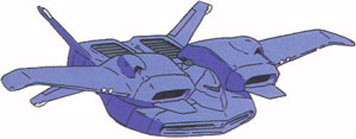

| Dodai II Transport Aircraft |
|
|  | |
General and Technical Data |
|
|
Unit type: subflight Armament: 2-barrel AA machinegun turret |
|
| Technical and Historical Notes | |
|
Something of an offshoot from the Dodai YS, the Dodai II isn't hardly a bomber at all. Rather, it takes the Dodai YS's unusual job and turns it into a full-time profession; its sole purpose is to transport mobile suits and provide them with a highly mobile platform to stage their attacks. The Dodai II has no real weaponry that would pose a threat to enemy units, but it is almost as fast and maneuverable as a Dopp despite its bulky size and appearance.

Cockpit |
 RPG quick stats sheet
RPG quick stats sheet